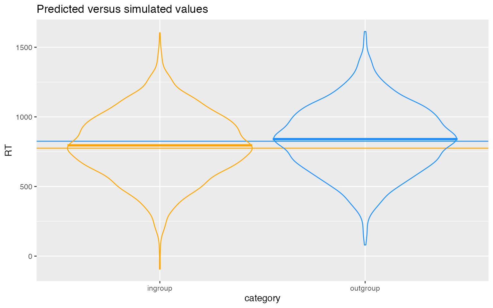

vignettes/appendix1a_example_code.Rmd
appendix1a_example_code.RmdDownload the .Rmd for this example
To give an overview of the simulation task, we will simulate data from a design with crossed random factors of subjects and stimuli, fit a model to the simulated data, and then recover the parameter values we put in from the model output.
In this hypothetical study, subjects classify the emotional expressions of faces as quickly as possible, and we use their response time as the primary dependent variable. Let’s imagine that the faces are of two types: either from the subject’s ingroup or from an outgroup. For simplicity, we further assume that each face appears only once in the stimulus set. The key question is whether there is any difference in classification speed across the type of face.
The important parts of the design are:
T or tau)O or omega)
# load required packages
library("lme4") # model specification / estimation
library("afex") # anova and deriving p-values from lmer
library("broom.mixed") # extracting data from model fits
library("faux") # generate correlated values
library("tidyverse") # data wrangling and visualisation
# ensure this script returns the same results on each run
set.seed(8675309)
faux_options(verbose = FALSE)
# set all data-generating parameters
beta_0 <- 800 # intercept; i.e., the grand mean
beta_1 <- 50 # slope; i.e, effect of category
omega_0 <- 80 # by-item random intercept sd
tau_0 <- 100 # by-subject random intercept sd
tau_1 <- 40 # by-subject random slope sd
rho <- .2 # correlation between intercept and slope
sigma <- 200 # residual (error) sd
# set number of subjects and items
n_subj <- 100 # number of subjects
n_ingroup <- 25 # number of items in ingroup
n_outgroup <- 25 # number of items in outgroupYou can use one of two methods. The first uses the function MASS::mvrnorm, but you have to calculate the variance-covariance matrix yourself. This gets more complicated as you have more variables (e.g., in a design with more than 1 fixed factor).
# simulate a sample of subjects
# calculate random intercept / random slope covariance
covar <- rho * tau_0 * tau_1
# put values into variance-covariance matrix
cov_mx <- matrix(
c(tau_0^2, covar,
covar, tau_1^2),
nrow = 2, byrow = TRUE)
# generate the by-subject random effects
subject_rfx <- MASS::mvrnorm(n = n_subj,
mu = c(T_0s = 0, T_1s = 0),
Sigma = cov_mx)
# combine with subject IDs
subjects <- data.frame(subj_id = seq_len(n_subj),
subject_rfx)Alternatively, you can use the function faux::rnorm_multi, which generates a table of n simulated values from a multivariate normal distribution by specifying the means (mu) and standard deviations (sd) of each variable, plus the correlations (r), which can be either a single value (applied to all pairs), a correlation matrix, or a vector of the values in the upper right triangle of the correlation matrix.
# simulate a sample of subjects
# sample from a multivariate random distribution
subjects <- faux::rnorm_multi(
n = n_subj,
mu = 0, # means for random effects are always 0
sd = c(tau_0, tau_1), # set SDs
r = rho, # set correlation, see ?rnorm_multi
varnames = c("T_0s", "T_1s")
)
# add subject IDs
subjects$subj_id <- seq_len(n_subj)
data.frame(
parameter = c("omega_0", "tau_0", "tau_1", "rho"),
value = c(omega_0, tau_0, tau_1, rho),
simulated = c(
sd(items$O_0i),
sd(subjects$T_0s),
sd(subjects$T_1s),
cor(subjects$T_0s, subjects$T_1s)
)
)## parameter value simulated
## 1 omega_0 80.0 68.7759151
## 2 tau_0 100.0 91.1610878
## 3 tau_1 40.0 41.0218392
## 4 rho 0.2 0.1083145
dat_sim <- trials %>%
mutate(RT = beta_0 + T_0s + O_0i + (beta_1 + T_1s) * X_i + e_si) %>%
select(subj_id, item_id, category, X_i, RT)
ggplot(dat_sim, aes(category, RT, color = category)) +
# predicted means
geom_hline(yintercept = (beta_0 - 0.5*beta_1), color = "orange") +
geom_hline(yintercept = (beta_0 + 0.5*beta_1), color = "dodgerblue") +
# actual data
geom_violin(alpha = 0, show.legend = FALSE) +
stat_summary(fun = mean,geom="crossbar", show.legend = FALSE) +
scale_color_manual(values = c("orange", "dodgerblue")) +
ggtitle("Predicted versus simulated values")
Once you’ve tested your data generating code above, put it into a function so you can run it repeatedly. We used pipes to combine a few steps at the end.
# set up the custom data simulation function
my_sim_data <- function(
n_subj = 100, # number of subjects
n_ingroup = 25, # number of ingroup stimuli
n_outgroup = 25, # number of outgroup stimuli
beta_0 = 800, # grand mean
beta_1 = 50, # effect of category
omega_0 = 80, # by-item random intercept sd
tau_0 = 100, # by-subject random intercept sd
tau_1 = 40, # by-subject random slope sd
rho = 0.2, # correlation between intercept and slope
sigma = 200) { # residual (standard deviation)
# simulate a sample of items
items <- data.frame(
item_id = seq_len(n_ingroup + n_outgroup),
category = rep(c("ingroup", "outgroup"), c(n_ingroup, n_outgroup)),
X_i = rep(c(-0.5, 0.5), c(n_ingroup, n_outgroup)),
O_0i = rnorm(n = n_ingroup + n_outgroup, mean = 0, sd = omega_0)
)
# simulate a sample of subjects
subjects <- faux::rnorm_multi(
n = n_subj, mu = 0, sd = c(tau_0, tau_1), r = rho,
varnames = c("T_0s", "T_1s")
)
subjects$subj_id <- 1:n_subj
# cross subject and item IDs
crossing(subjects, items) %>%
mutate(
e_si = rnorm(nrow(.), mean = 0, sd = sigma),
RT = beta_0 + T_0s + O_0i + (beta_1 + T_1s) * X_i + e_si
) %>%
select(subj_id, item_id, category, X_i, RT)
}
# fit a linear mixed-effects model to data
mod_sim <- lmer(RT ~ 1 + X_i + (1 | item_id) + (1 + X_i | subj_id),
data = dat_sim)
summary(mod_sim, corr = FALSE)## Linear mixed model fit by REML. t-tests use Satterthwaite's method [
## lmerModLmerTest]
## Formula: RT ~ 1 + X_i + (1 | item_id) + (1 + X_i | subj_id)
## Data: dat_sim
##
## REML criterion at convergence: 67732.4
##
## Scaled residuals:
## Min 1Q Median 3Q Max
## -3.8300 -0.6755 0.0014 0.6799 3.6306
##
## Random effects:
## Groups Name Variance Std.Dev. Corr
## subj_id (Intercept) 8801 93.81
## X_i 2643 51.41 -0.05
## item_id (Intercept) 4094 63.98
## Residual 41260 203.13
## Number of obs: 5000, groups: subj_id, 100; item_id, 50
##
## Fixed effects:
## Estimate Std. Error df t value Pr(>|t|)
## (Intercept) 818.03 13.35 120.73 61.290 <2e-16 ***
## X_i 44.64 19.67 54.57 2.269 0.0272 *
## ---
## Signif. codes: 0 '***' 0.001 '**' 0.01 '*' 0.05 '.' 0.1 ' ' 1Use broom.mixed::tidy(mod_sim) to get a tidy table of the results. Below, we added column “parameter” and “value”, so you can compare the estimate from the model to the parameters you used to simulate the data.
| effect | group | term | parameter | value | estimate | std.error | statistic | df | p.value |
|---|---|---|---|---|---|---|---|---|---|
| fixed | NA | (Intercept) | beta_0 | 800.0 | 818.030 | 13.347 | 61.290 | 120.731 | 0.000 |
| fixed | NA | X_i | beta_1 | 50.0 | 44.639 | 19.671 | 2.269 | 54.573 | 0.027 |
| ran_pars | subj_id | sd__(Intercept) | omega_0 | 80.0 | 93.813 | NA | NA | NA | NA |
| ran_pars | subj_id | cor__(Intercept).X_i | tau_0 | 100.0 | -0.048 | NA | NA | NA | NA |
| ran_pars | subj_id | sd__X_i | tau_1 | 40.0 | 51.408 | NA | NA | NA | NA |
| ran_pars | item_id | sd__(Intercept) | rho | 0.2 | 63.983 | NA | NA | NA | NA |
| ran_pars | Residual | sd__Observation | sigma | 200.0 | 203.125 | NA | NA | NA | NA |
You can wrap up the data generating function and the analysis code in a new function (single_run) that returns a tidy table of the analysis results, and optionally saves this info to a file if you set a filename.
# set up the power function
single_run <- function(filename = NULL, ...) {
# ... is a shortcut that forwards any additional arguments to my_sim_data()
dat_sim <- my_sim_data(...)
mod_sim <- lmer(RT ~ X_i + (1 | item_id) + (1 + X_i | subj_id),
dat_sim)
sim_results <- broom.mixed::tidy(mod_sim)
# append the results to a file if filename is set
if (!is.null(filename)) {
append <- file.exists(filename) # append if the file exists
write_csv(sim_results, filename, append = append)
}
# return the tidy table
sim_results
}
# run one model with default parameters
single_run()## # A tibble: 7 x 8
## effect group term estimate std.error statistic df p.value
## <chr> <chr> <chr> <dbl> <dbl> <dbl> <dbl> <dbl>
## 1 fixed <NA> (Intercept) 812. 14.0 57.8 92.1 3.63e-74
## 2 fixed <NA> X_i 47.4 23.4 2.02 50.7 4.85e- 2
## 3 ran_pars subj_id sd__(Intercept) 80.0 NA NA NA NA
## 4 ran_pars subj_id cor__(Intercept… 0.162 NA NA NA NA
## 5 ran_pars subj_id sd__X_i 39.9 NA NA NA NA
## 6 ran_pars item_id sd__(Intercept) 79.1 NA NA NA NA
## 7 ran_pars Residu… sd__Observation 201. NA NA NA NA
# run one model with new parameters
single_run(n_ingroup = 50, n_outgroup = 45, beta_1 = 20)## # A tibble: 7 x 8
## effect group term estimate std.error statistic df p.value
## <chr> <chr> <chr> <dbl> <dbl> <dbl> <dbl> <dbl>
## 1 fixed <NA> (Intercept) 792. 13.0 61.0 178. 2.29e-121
## 2 fixed <NA> X_i 18.8 17.1 1.10 101. 2.75e- 1
## 3 ran_pars subj_id sd__(Intercept) 99.3 NA NA NA NA
## 4 ran_pars subj_id cor__(Intercep… 0.0788 NA NA NA NA
## 5 ran_pars subj_id sd__X_i 35.5 NA NA NA NA
## 6 ran_pars item_id sd__(Intercept) 78.9 NA NA NA NA
## 7 ran_pars Residu… sd__Observation 199. NA NA NA NATo get an accurate estimation of power, you need to run the simulation many times. We use 100 here as an example, but your results are more accurate the more replications you run. This will depend on the specifics of your analysis, but we recommend at least 1000 replications.
filename <- "sims/sims.csv" # change for new analyses
if (!file.exists(filename)) {
# run simulations and save to a file
reps <- 100
sims <- purrr::map_df(1:reps, ~single_run(filename))
}
# read saved simulation data
sims <- read_csv(filename)
# calculate mean estimates and power for specified alpha
alpha <- 0.05
sims %>%
filter(effect == "fixed") %>%
group_by(term) %>%
summarise(
mean_estimate = mean(estimate),
mean_se = mean(std.error),
power = mean(p.value < alpha),
.groups = "drop"
)## # A tibble: 2 x 4
## term mean_estimate mean_se power
## <chr> <dbl> <dbl> <dbl>
## 1 (Intercept) 803. 15.3 1
## 2 X_i 45.9 23.6 0.53One way many researchers would normally analyse data like this is by averaging each subject’s reaction times across the ingroup and outgroup stimuli and compare them using a paired-samples t-test or ANOVA (which is formally equivalent). Here, we use afex::aov_ez to analyse a version of our dataset that is aggregated by subject.
# aggregate by subject and analyze with ANOVA
dat_subj <- dat_sim %>%
group_by(subj_id, category, X_i) %>%
summarise(RT = mean(RT), .groups = "drop")
afex::aov_ez(
id = "subj_id",
dv = "RT",
within = "category",
data = dat_subj
)## Anova Table (Type 3 tests)
##
## Response: RT
## Effect df MSE F ges p.value
## 1 category 1, 99 2971.82 33.52 *** .043 <.001
## ---
## Signif. codes: 0 '***' 0.001 '**' 0.01 '*' 0.05 '+' 0.1 ' ' 1Alternatively, you could aggregate by item, averaging all subjects’ scores for each item.
# aggregate by item and analyze with ANOVA
dat_item <- dat_sim %>%
group_by(item_id, category, X_i) %>%
summarise(RT = mean(RT), .groups = "drop")
afex::aov_ez(
id = "item_id",
dv = "RT",
between = "category",
data = dat_item
)## Anova Table (Type 3 tests)
##
## Response: RT
## Effect df MSE F ges p.value
## 1 category 1, 48 4506.53 5.53 * .103 .023
## ---
## Signif. codes: 0 '***' 0.001 '**' 0.01 '*' 0.05 '+' 0.1 ' ' 1We can create a power analysis function that simulates data using our data-generating process from my_sim_data(), creates these two aggregated datasets, and analyses them with ANOVA. We’ll just return the p-values for the effect of category as we can calculate power as the percentage of these simulations that reject the null hypothesis.
# power function for ANOVA
my_anova_power <- function(...) {
dat_sim <- my_sim_data(...)
dat_subj <- dat_sim %>%
group_by(subj_id, category, X_i) %>%
summarise(RT = mean(RT), .groups = "drop")
dat_item <- dat_sim %>%
group_by(item_id, category, X_i) %>%
summarise(RT = mean(RT), .groups = "drop")
a_subj <- afex::aov_ez(id = "subj_id",
dv = "RT",
within = "category",
data = dat_subj)
suppressMessages(
# check contrasts message is annoying
a_item <- afex::aov_ez(
id = "item_id",
dv = "RT",
between = "category",
data = dat_item
)
)
list(
"subj" = a_subj$anova_table$`Pr(>F)`,
"item" = a_item$anova_table$`Pr(>F)`
)
}Run this function with the default parameters to determine the power each analysis has to detect an effect of category of 50 ms.
# run simulations and calculate power
reps <- 100
anova_sims <- purrr::map_df(1:reps, ~my_anova_power())
alpha <- 0.05
power_subj <- mean(anova_sims$subj < alpha)
power_item <- mean(anova_sims$item < alpha)The by-subjects ANOVA has power of 0.9, while the by-items ANOVA has power of 0.52. This isn’t simply a consequence of within versus between design or the number of subjects versus items, but rather a consequence of the inflated false positive rate of some aggregated analyses.
Set the effect of category to 0 to calculate the false positive rate. This is the probability of concluding there is an effect when there is no actual effect in your population.
# run simulations and calculate the false positive rate
reps <- 100
anova_fp <- purrr::map_df(1:reps, ~my_anova_power(beta_1 = 0))
false_pos_subj <- mean(anova_fp$subj < alpha)
false_pos_item <- mean(anova_fp$item < alpha)Ideally, your false positive rate will be equal to alpha, which we set here at 0.05. The by-subject aggregated analysis has a massively inflated false positive rate of 0.58, while the by-item aggregated analysis has a closer-to-nominal false positive rate of 0.09. This is not a mistake, but a consequence of averaging items and analysing a between-item factor. Indeed, this problem with false positives is one of the most compelling reasons to analyze cross-classified data using mixed effects models.